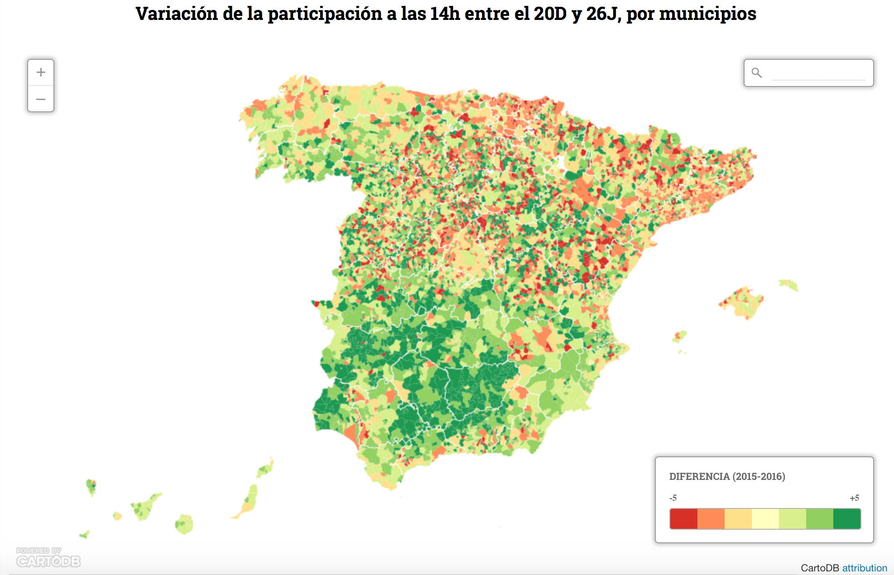

In Dev Tools open ⠇ menu > More tools > Rendering and use the Emulate vision deficiencies drop-down to identify the problems with the following graphic:
Use Dev Tools as in Accessible Color Standards - Designing in the Browser to correct the color contrast where marked with 🎒.
💡 WebAIM color accessibility levels:
Level A: basic requirement for some users with disabilities to be able to access and use web content -- color contrast of 3:1
Level AA: overall accessibility and removal of significant barriers to accessing content -- color contrast of 4.5:1
Level AAA: provides improvements and enhancements to web accessibility for some users with disabilities -- color contrast of 7:1
🎒 adjust text color so the color contrast with the background complies with AA level
🎒 adjust text color so the color contrast with the background complies with AAA level